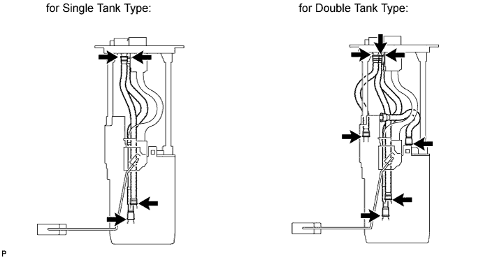
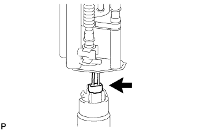
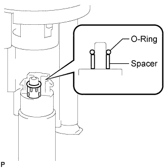
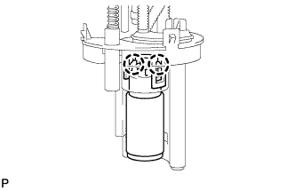
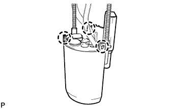
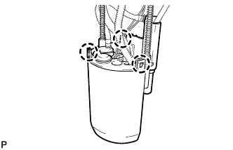
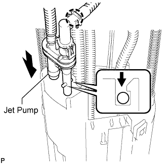
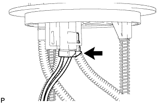

FUEL PUMP > REASSEMBLY |

| 1. INSTALL FUEL PUMP (for Double Tank Type) |
 |
Connect the fuel pump wire harness connector to the fuel pump.
 |
Apply a light coat of gasoline to a new O-ring. Then install the spacer and O-ring to the fuel pump.
 |
Attach the 2 claws to the claw holes to install the fuel pump.
| 2. INSTALL NO. 1 FUEL SUB-TANK (for Single Tank Type) |
 |
Attach the 3 claws to the claw holes to install the fuel sub-tank.
| 3. INSTALL NO. 1 FUEL SUB-TANK (for Double Tank Type) |
 |
Attach the 3 claws to the claw holes to install the fuel sub-tank.
 |
Attach the jet pump to the sub-tank.
 |
Connect the fuel pump connector.
| 4. INSTALL FUEL SENDER GAUGE ASSEMBLY |
 |
Set the sender gauge to the fuel sub-tank. Then slide the sender gauge downward to install it.
 |
Connect the fuel sender gauge connector.